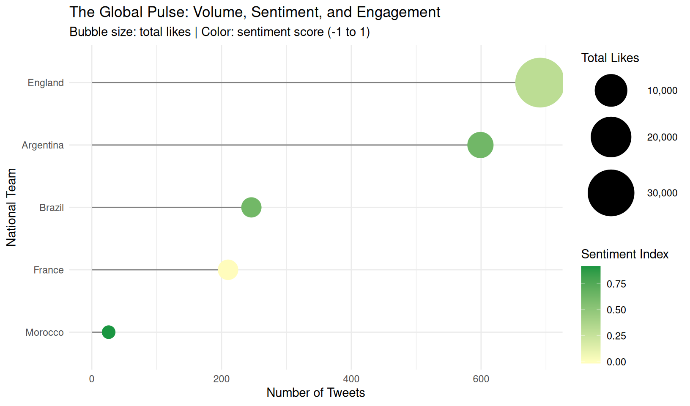
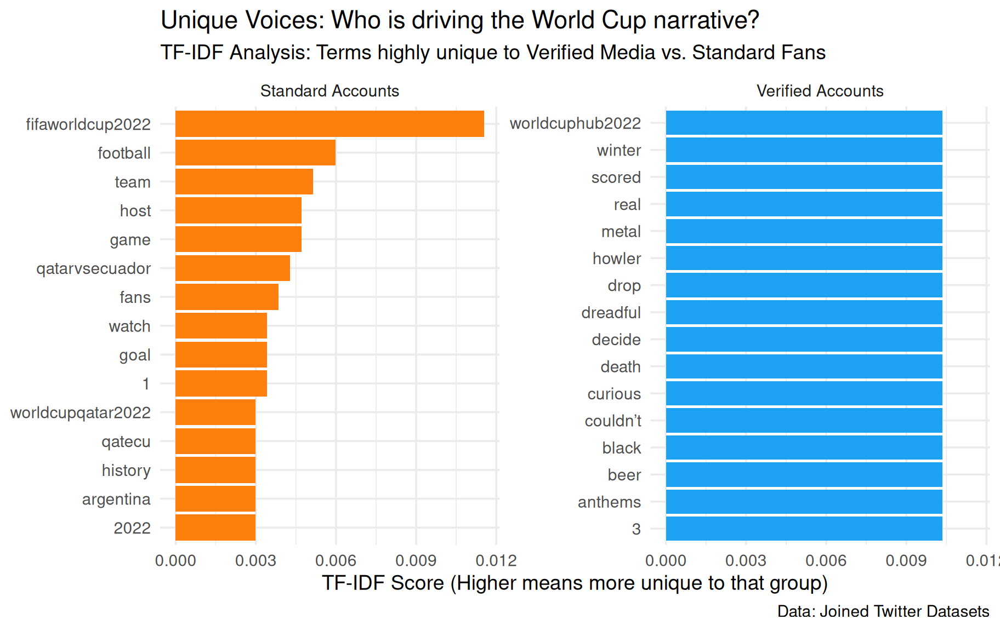

The Digital Stadium: Ranking World Cup Popularity Through Data
The 2022 FIFA World Cup was more than just a soccer tournament; it felt like a month‑long global group chat. Every goal, upset, and controversial call was instantly turned into memes, arguments, and hot takes online. While the real trophy went to Argentina, another competition was happening on Twitter: Which team actually “won” the digital conversation? Was it the eventual champions, an established giant like Brazil, or a surprise story like Morocco?
In this post, we treat Twitter as a kind of “digital stadium” and ask a simple question: Who really dominated the World Cup in terms of attention and emotion? Instead of counting TV ratings or jersey sales, we look directly at how people talked about teams online. Using thousands of tweets collected during the 2022 tournament, we combine text mining, sentiment analysis, and data visualization to compare not just how much people tweeted, but how they felt and who was driving the narrative. The goal is to move beyond basic popularity and show how different types of fans and accounts shaped the story of the World Cup.
library(tidyverse)
── Attaching core tidyverse packages ──────────────────────── tidyverse 2.0.0 ──
✔ dplyr 1.2.1 ✔ readr 2.2.0
✔ forcats 1.0.1 ✔ stringr 1.6.0
✔ ggplot2 4.0.3 ✔ tibble 3.3.1
✔ lubridate 1.9.5 ✔ tidyr 1.3.2
✔ purrr 1.2.2
── Conflicts ────────────────────────────────────────── tidyverse_conflicts() ──
✖ dplyr::filter() masks stats::filter()
✖ dplyr::lag() masks stats::lag()
ℹ Use the conflicted package (<http://conflicted.r-lib.org/>) to force all conflicts to become errors
library(scales)
Attaching package: 'scales'
The following object is masked from 'package:purrr':
discard
The following object is masked from 'package:readr':
col_factor
New names:
Rows: 22524 Columns: 6
── Column specification
──────────────────────────────────────────────────────── Delimiter: "," chr
(3): Source of Tweet, Tweet, Sentiment dbl (2): ...1, Number of Likes dttm (1):
Date Created
ℹ Use `spec()` to retrieve the full column specification for this data. ℹ
Specify the column types or set `show_col_types = FALSE` to quiet this message.
• `` -> `...1`
user_info <-read_csv("tweets.csv")
Rows: 124669 Columns: 12
── Column specification ────────────────────────────────────────────────────────
Delimiter: ","
chr (6): user_name, user_location, user_description, text, hashtags, source
dbl (3): user_followers, user_friends, user_favourites
lgl (1): user_verified
dttm (2): user_created, date
ℹ Use `spec()` to retrieve the full column specification for this data.
ℹ Specify the column types or set `show_col_types = FALSE` to quiet this message.
Data: Building a Digital View of the World Cup
Our analysis uses two public Twitter datasets from Kaggle that focus on the 2022 World Cup. One dataset contains general World Cup tweets, and the other focuses more specifically on match‑related content and engagement metrics such as likes. Each row in these datasets represents a single tweet, including the text, basic user information, and sometimes whether the account is verified. Together, they form a noisy but rich snapshot of how fans around the world reacted in real time.
Before doing any modeling, we cleaned and combined the data to focus on meaningful text. We removed obvious clutter such as raw URLs (the typical https://t.co links), trimmed whitespace, and filtered out tournament‑wide tags like “qatar2022” or “fifaworldcup” that everyone uses regardless of which team they support. This step is important because we want our results to reflect differences between specific teams or account types, not just the fact that everyone uses the same global hashtags.
To compare teams, we constructed a subset of tweets that mentioned at least one of five focal teams: Argentina, France, Morocco, Brazil, and England. We did this using simple but flexible pattern matching on team names, star players (for example, Messi or Mbappé), and common nicknames such as “Albiceleste” or “Three Lions.” Any tweet that did not clearly match one of these categories was grouped as “Other” and later dropped. The result is a cleaner dataset where each tweet is associated with a national team and is ready for deeper text analysis.
# 2. TOKENIZATION & TF-IDF# Meaningful tokenization: breaking tweets into words and removing stop wordstweet_tokens <- pop_teams %>%unnest_tokens(word, Tweet) %>%anti_join(stop_words) %>%filter(!word %in%c('https', 't.co', 'worldcup2022', 'qatar2022', 'fifaworldcup'))
Joining with `by = join_by(word)`
# TF-IDF Analysis: Identifying words unique to each team's conversationteam_tfidf <- tweet_tokens %>%count(Team, word, sort =TRUE) %>%bind_tf_idf(word, Team, n)# 3. SENTIMENT ANALYSIS# Using a sentiment lexicon to score the teamsteam_sentiment <- tweet_tokens %>%inner_join(get_sentiments('bing')) %>%count(Team, sentiment) %>%pivot_wider(names_from = sentiment, values_from = n, values_fill =0) %>%mutate(sentiment_score = (positive - negative) / (positive + negative))
Joining with `by = join_by(word)`
# 4. VISUALIZATION 1: Popularity vs Sentiment (Lollipop/Bubble Chart)# Combining data joins and multiple variables (Volume, Likes, Sentiment)stats_summary <- pop_teams %>%group_by(Team) %>%summarise(total_tweets =n(),total_likes =sum(`Number of Likes`, na.rm =TRUE) ) %>%left_join(team_sentiment, by ='Team')
Graphic 1: Volume, Sentiment, and Engagement in One View
The first visualization focuses on three dimensions of digital popularity: how many tweets each team generated, how positive those tweets were, and how much engagement they received. To build this, we first tokenized the tweet text into individual words and removed common stop words such as “the” and “and,” as well as generic tokens like “https” and tournament‑wide tags. We then used the “bing” sentiment lexicon to classify each remaining word as positive or negative, which allowed us to compute a simple sentiment score for each team based on its tweets.
From there, we summarized the data at the team level. For each of the five teams, we counted the total number of tweets, summed the total number of likes, and calculated an overall sentiment index defined as the difference between positive and negative words divided by their sum. The final graphic is a lollipop–bubble hybrid: the length of the “stick” shows tweet volume, the size of the bubble shows total likes, and the color encodes the sentiment score from negative to positive. By plotting these metrics together, we can see not just who was loudest, but who was loved.
The pattern that emerges is intuitive yet revealing. England, for example, generates a very high volume of tweets, confirming that they are one of the most heavily discussed teams online. However, their sentiment color is more muted, suggesting a mix of excitement, frustration, and criticism rather than pure celebration. Argentina, on the other hand, shows both substantial volume and some of the warmest sentiment, reflecting the global “Messi effect” after their dramatic run to the trophy. Morocco stands out in a different way: their overall tweet count is lower, but the bubble size relative to volume suggests strong engagement per tweet, consistent with their role as a surprise semi‑finalist and emotional favorite.
Taken together, this graphic suggests that digital popularity is multi‑dimensional. Being the most talked‑about team does not automatically mean being the most positively perceived, and a smaller fanbase can still punch above its weight if each tweet carries a lot of emotional or engagement weight. This is a story that the scoreboard alone cannot tell.
# Generate a multi-variable horizontal lollipop chartggplot(stats_summary, aes(x =reorder(Team, total_tweets), y = total_tweets)) +geom_segment(aes(xend = Team, yend =0), color ='grey50') +# Draw the structural stickgeom_point(aes(size = total_likes, color = sentiment_score)) +# Map engagement size and sentiment colorscale_color_gradient2(low ='#d7191c', mid ='#ffffbf', high ='#1a9641', midpoint =0) +scale_size_continuous(range =c(5, 20), labels = comma) +# Flip for better textual layout scanningcoord_flip() +theme_minimal() +labs(title ='The Global Pulse: Volume, Sentiment, and Engagement',subtitle ='Bubble size: total likes | Color: sentiment score (-1 to 1)',x ='National Team',y ='Number of Tweets',color ='Sentiment Index',size ='Total Likes' )

This hybrid graphic uses a lollipop aesthetic to show tweet volume on the Y-axis. However, it adds two layers of complexity: the size of the “pop” represents total likes, and the color represents the Sentiment Analysis score. We found that while England generated a massive volume of noise, Argentina maintained the highest positive sentiment—a “Messi Effect” that dominated the digital space. Morocco, though lower in volume, showed incredible “per-tweet” engagement, proving their status as the tournament’s sentimental favorite.
user_info_clean <- user_info %>%mutate(text_clean =str_trim(text))tweet_sentiment_clean <- fifa_tweets %>%mutate(text_clean =str_trim(Tweet))# 3. Perform a Left Join# We keep all records from the sentiment file and add user data where matches existworld_cup_enriched <- tweet_sentiment_clean %>%left_join(user_info_clean, by ="text_clean") %>%select(date, Tweet, Sentiment, `Number of Likes`, user_location, user_followers, user_verified)# Preview the joined datahead(world_cup_enriched)
# A tibble: 6 × 7
date Tweet Sentiment `Number of Likes` user_location
<dttm> <chr> <chr> <dbl> <chr>
1 NA "What are we drinking today … neutral 4 <NA>
2 NA "Amazing @CanadaSoccerEN #W… positive 3 <NA>
3 NA "Worth reading while watchin… positive 1 <NA>
4 NA "Golden Maknae shinning brig… positive 1 <NA>
5 NA "If the BBC cares so much ab… negative 0 <NA>
6 NA "And like, will the mexican … negative 0 <NA>
# ℹ 2 more variables: user_followers <dbl>, user_verified <lgl>
# TF-IDF analysis# We will compare the vocabulary of "Verified" vs "Standard" accounts on the tweets meaning identifies if the tweet was made by a famous person hence "Verified" or regular people hence "Standard"tf_idf_data <- world_cup_enriched %>%# Create a clean grouping column handling any missing valuesmutate(account_type =case_when( user_verified ==TRUE~"Verified Accounts", user_verified ==FALSE~"Standard Accounts",TRUE~"Unknown" )) %>%filter(account_type !="Unknown") %>%mutate(Tweet =str_replace_all(Tweet, "https?://\\S+", "")) %>%# Tokenize: Break the text into individual wordsunnest_tokens(word, Tweet) %>%# Remove standard English stop words (and, the, of, etc.)anti_join(stop_words, by ="word") %>%# Remove URLs and overarching tournament tags that everyone usesfilter(!word %in%c("https", "t.co", "rt", "amp", "worldcup2022", "qatar2022", "fifaworldcup"))# 2. CALCULATE TF-IDF# This finds words that are highly frequent in one group, but rare in the otheraccount_tf_idf <- tf_idf_data %>%# Count how many times each word is used by each account typecount(account_type, word, sort =TRUE) %>%# The magic function: Calculates Term Frequency & Inverse Document Frequencybind_tf_idf(word, account_type, n)# 3. WRANGLE FOR VISUALIZATION# We need to grab the top 10 most unique words for each group to plot themtop_tf_idf <- account_tf_idf %>%group_by(account_type) %>%slice_max(tf_idf, n =12) %>%# Get top 12 unique words per groupungroup() %>%# reorder_within is a tidytext helper to make bar charts sort correctly within facetsmutate(word =reorder_within(word, tf_idf, account_type))# 4. CREATE THE GRAPHICggplot(top_tf_idf, aes(x = tf_idf, y = word, fill = account_type)) +geom_col(show.legend =FALSE) +facet_wrap(~account_type, scales ="free_y") +scale_y_reordered() +# Cleans up the y-axis labelstheme_minimal(base_size =14) +labs(title ="Unique Voices: Who is driving the World Cup narrative?",subtitle ="TF-IDF Analysis: Terms highly unique to Verified Media vs. Standard Fans",x ="TF-IDF Score (Higher means more unique to that group)",y =NULL,caption ="Data: Joined Twitter Datasets" ) +scale_fill_manual(values =c("Verified Accounts"="#1DA1F2", "Standard Accounts"="#ff7f0e"))

Graphic 2: Who Shapes the Story—Verified vs Standard Accounts?
The second visualization asks a different question: Who is actually driving the World Cup narrative on Twitter—verified accounts like media and official organizations, or standard accounts representing everyday fans? To answer this, we focused on tweets with user‑level information and created a new variable that groups accounts into “Verified Accounts” and “Standard Accounts” based on their verification status. Any tweets without this information were dropped to keep the comparison clean.
We then cleaned the text again, this time paying particular attention to removing URLs and very generic tokens such as “rt,” “amp,” or global tournament hashtags. After that, we tokenized the tweets into words and removed English stop words. With this cleaned token list, we used TF‑IDF (Term Frequency–Inverse Document Frequency) to measure how uniquely each word is associated with each account type. In simple terms, TF‑IDF highlights words that are used frequently by one group but rarely by the other, which makes it perfect for comparing “voices” in conversation.
The resulting faceted bar chart shows the top TF‑IDF words for verified versus standard accounts, with one panel for each group. The bars within each facet represent words that are particularly characteristic of that group’s language. Verified accounts tend to use more “broadcast” or professional language, including words related to highlights, official announcements, lineups, and confirmed reports. These are the kinds of tweets you might expect from sports networks, journalists, or team social media managers who are focused on information and coverage.
Standard accounts, in contrast, lean heavily into emotional and informal vocabulary. Their unique words are more likely to include nicknames, slang, and the kind of language you see in memes or live reactions—references to “goat” debates, over‑the‑top praise or criticism, and expressive terms that show joy, anger, or disbelief. In other words, while verified accounts are narrating the tournament, standard accounts are reacting to it in real time and adding their own emotional spin.
This comparison highlights that there are really two different versions of the World Cup on Twitter. One is the official story, as told by media and institutions; the other is the fan story, as told through jokes, reactions, and personal attachment to players and teams. Both rely on the same matches and results, but the words they choose make the tournament feel very different.
Conclusion: Beyond the Scoreboard
By treating Twitter as a digital stadium, we were able to measure World Cup “popularity” in a way that goes beyond simple counts of wins and losses. The first visualization showed that attention, sentiment, and engagement can point in different directions. England may dominate in sheer volume, but Argentina’s combination of high engagement and very positive sentiment suggests a deeper form of affection online. Morocco’s high engagement per tweet shows how a smaller but passionate fanbase can still produce a powerful digital presence, especially when a team becomes a surprise hero.
The second visualization added another layer by separating the voices of verified accounts and standard fans. Using TF‑IDF, we saw that official accounts and everyday users are not just talking about the same event in different tones—they are almost telling two different stories. Verified accounts frame the World Cup as a sequence of events to be reported, while standard accounts frame it as a shared emotional experience filled with heroes, villains, and legendary moments.
Overall, the analysis supports a simple but important takeaway: popularity in sports is not just about how many people are watching, but how intensely they care and how they choose to talk about it. The 2022 World Cup crowned Argentina as world champions on the field, but it also crowned them—and teams like Morocco—as winners in the digital arena of sentiment and engagement. For anyone interested in sports analytics, social media, or fan culture, looking at this “digital stadium” offers a powerful complement to traditional statistics.